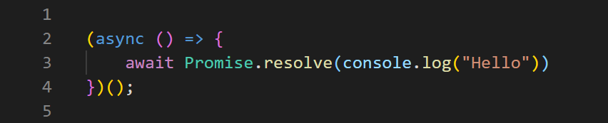
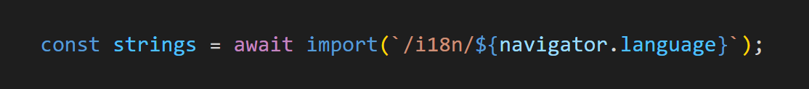
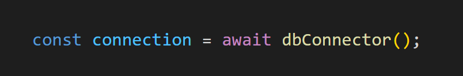
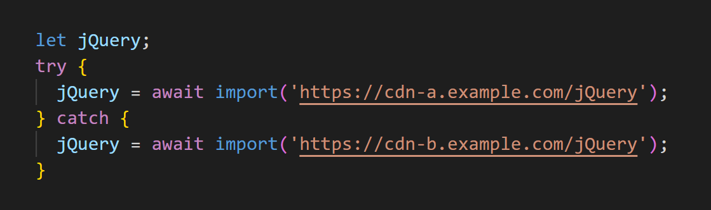

JavaScript is a very flexible and powerful language
that has transformed the web in this modern era.
One of the main reasons for JavaScript
to be dominant in web development
is that
it is continuously improved
with major updates often
“top-level await” proposal
This particular feature enables ES modules to act
as async functions.
It allows ES modules to await resources and block other modules who import them.
The modules who import an awaiting resource can only evaluate the body after the resources have been settled and are ready.
"await"
The "await" operator is used to wait for a Promise.
It can only be used inside an async function
What was wrong with the pre-top-level era?
Immediately Invoked Function Expressions (IIFEs)

But the above instance and solution is just the tip of the iceberg
Workarounds
- Export a Promise to represent initialization
- Resolve the IIFE promise with the variables that should be exported
1. Export a Promise to represent initialization
Problems
- Everyone should start following this pattern as a standard as you have to find the right promise to wait.
- If another module depends on the variables squareOutput and diagonalOutput from main.js, we should make sure we re-export the IIFE promise as well. So that the other module too knows when to access our variables.
2. Resolve the IIFE promise with the variables that should be exported
Problems
This pattern has the undesirable effect of requiring a broad reorganization of the related source into more dynamic patterns and placing much of the module body inside the .then() callback in order to use the dynamically available imports.
This represents a significant regression in terms of static analyzability, testability, ergonomics, and more, compared to ES2015 modules.
How Top-level Await Addresses the Above Problem?
Top-level await allows us to let the module system take care of the promises and the coordination amongst them. This makes it really simple on our end.
Implementation
- V8
(chrome.exe --js-flags="--harmony-top-level-await")
- Webpack
(>5.0.0, experiments option)
- Babel
(babel/plugin-syntax-top-level-await)
Cases of usage
- Dynamic dependency pathing
- Resource initialization
- Dependency fallbacks
Dynamic dependency pathing

Resource initialization

Dependency fallbacks
